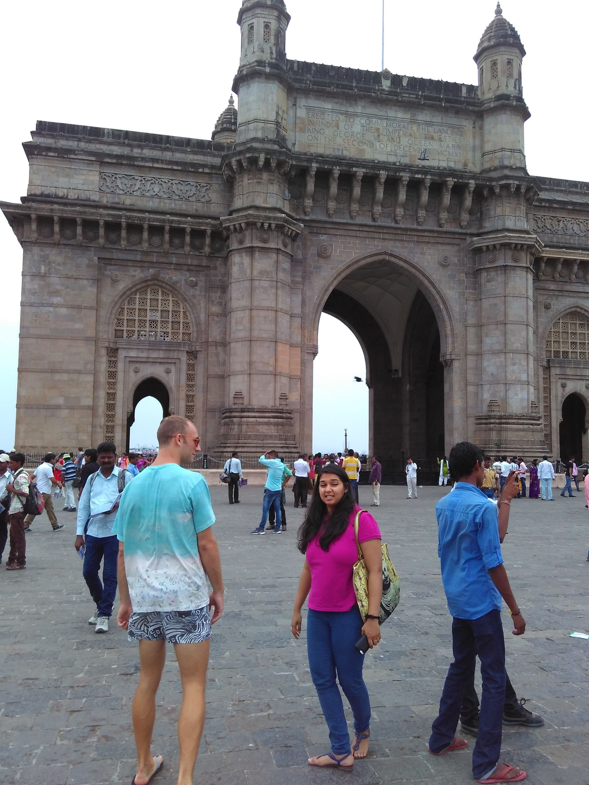
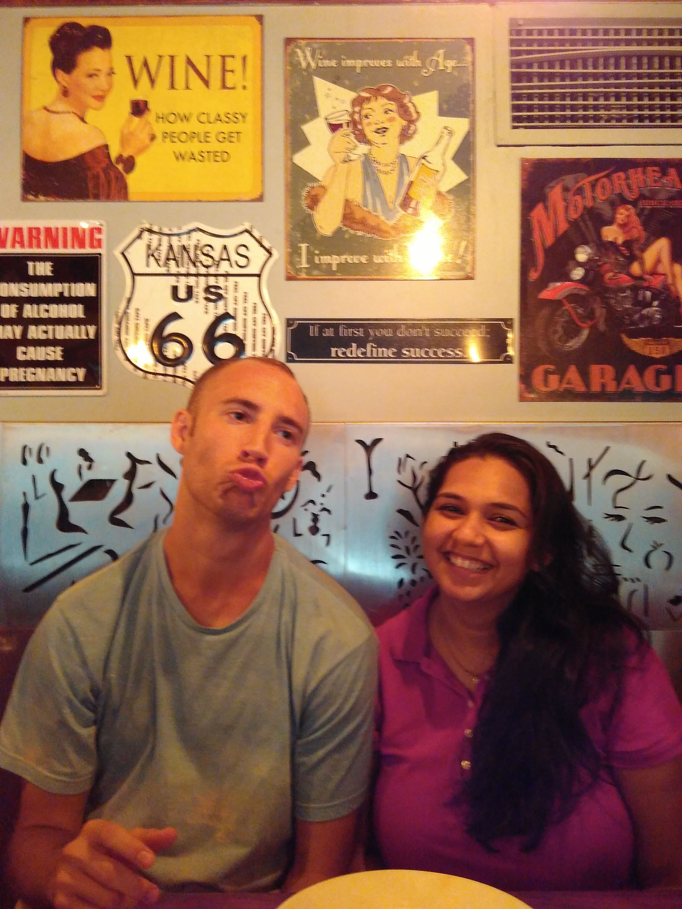
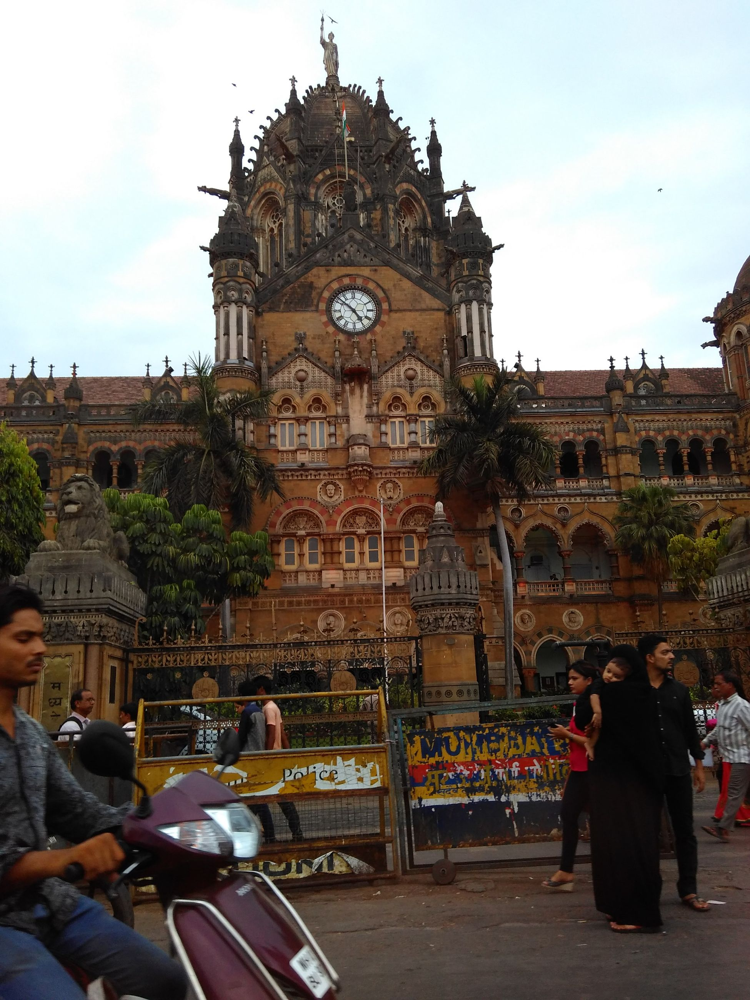
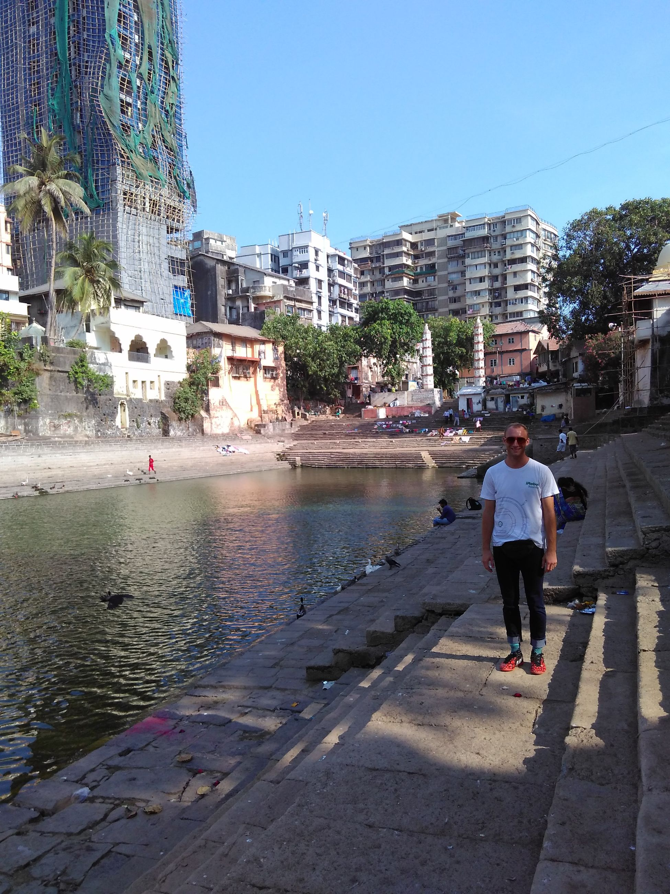

Never thought we'd make it to this one. We had another friend, Neha, come visit us when we first arrived in Singapore. Prior to that we hadn't seen her in 1.5 years after a drunken night. We used to do a "book club" with her though. College will do that to you
Neha moved to Mumbai a while back, and offered us a place to stay for the trip. Obviously, going budget, you can't refuse when someone invites you to their house. It saves both money and friendships... so off we went! Probably one of the more wild places we went to. It's crowded and hectic, but everything just works. I almost wanted to burst out into doing some yoga at some point but probably thought that was a little too appropriated. Instead, I toured a slum. No pictures from that though
Went to the main square where there were bombings in 2008. Went afterwards to Leopold Cafe, which was also bombed in 2008. Did that ever make U.S. news??


Some of the imperial architecture was stunning. Leave it to the Brits to make a slammin' train station, yet make a subpar curry!

The other times, we just chilled with Neha and Rahil (a friend of hers in Mumbai) and they showed us around to a bunch of local places. One super cool one was this watering hole of sorts that had apparently been there for quite a while. However, it was super local and not many people knew about it, so there was just some house located in the corner and some kids playing in the water

Overall, a super good trip. No more pictures worth showing, mostly because there are none. I think we had one too many Old Monks...